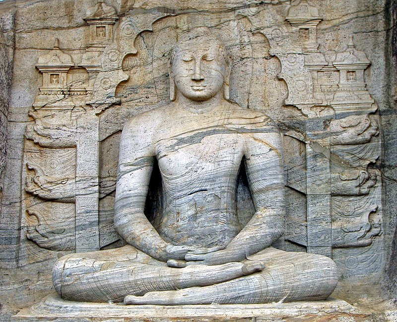

Йога (дев. योग, IAST: yoga) — понятие в индийской культуре, в широком смысле означающее совокупность различных духовных, психических и физических практик, разрабатываемых в разных направлениях индуизма и буддизма и нацеленных на управление психическими и физиологическими функциями организма с целью достижения индивидуумом возвышенного духовного и психического состояния[1]. В более узком смысле, йога — одна из шести ортодоксальных школ (даршан) философии индуизма[2].
Основные направления йоги: раджа-йога, карма-йога, джнана-йога, бхакти-йога и хатха-йога[3][4][5]. В контексте философии индуизма, под йогой понимается система раджа-йоги, изложенная в «Йога-сутрах» Патанджали и тесным образом связанная с основополагающими принципами санкхьи[6]. Йога обсуждается в различных писаниях индуизма, таких как Веды, Упанишады, «Бхагавадгита», «Хатха-йога-прадипика», «Шива-самхита» и Тантры. Конечная цель йоги может быть совершенно разной: от улучшения физического здоровья и до достижения мокши[1]. За пределами Индии термин «йога» зачастую ассоциируется лишь с хатха-йогой и её асанами — физическими упражнениями, что не отражает духовного и душевного аспектов йоги. Того, кто изучает и практикует йогу, именуют йогом или йогином.
Подробная информация в Википедии
Картинка с абсолютной ссылкой
